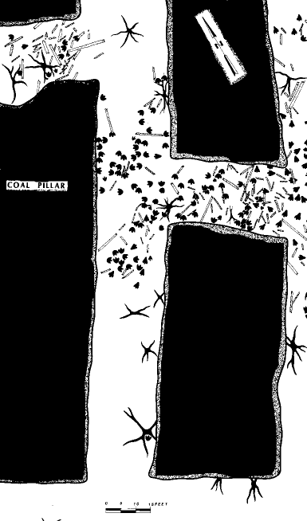

Dinosaurienspuren in Kohle
Copyright © 1994-1997 von
Andrew MacRae
{kind=link}


Dies ist eine Karte der Dachfläche (Oberseite) einer Kohleflöz in einer stillgelegten Mine, die in Gesteinen des späten Kreidealters der Blackhawk-Formation in der Nähe von Price im Südosten von Utah liegt. Dies ist nur eines von vielen ähnlichen Vorkommen in der Gegend. Viele lokale Bergarbeiter haben Fußabdrücke als Türstopper verwendet :-), oder Sie können Exemplare im Price-Museum besichtigen (sehr empfehlenswert). Die Skala (15 Fuß) befindet sich am unteren Rand des Bildes. Die großen, schwarzen rechteckigen Bereiche sind „Pfeiler" aus Kohle, die belassen wurden, um das Dach zu stützen (ich habe sie schwarz gefüllt, damit sich das Bild besser komprimiert). Das Flöz weist verkohlte Baumstümpfe (die schwarzen, strahlenden Symbole) auf, die auf der Kohleoberfläche (damals Torf) wuchsen, umgestürzte Baumstämme und Äste (die länglichen, umrandeten rechteckigen Symbole) sowie zahlreiche Dinosaurierfußabdrücke verschiedener Arten (die dreilappigen, schwarzen Symbole). Die Form und Größe der drei Symbole entspricht ungefähr ihrem tatsächlichen Aussehen (Fotos ebenfalls in Balsley). Balsley liefert folgende Beschreibung dieser und anderer Merkmale der Sedimente innerhalb und auf der Kohleflöz (S. 133):
"Bestände großer Bäume und Palmendickichte wurden in Wachstumsposition erhalten. Die Wurzelsysteme der größeren Bäume erstrecken sich horizontal über die Torf-Oberfläche und zeigen die Entwicklung der zuvor diskutierten nordwestlich-südwestlichen Orientierung [dies steht senkrecht zur regionalen Paläouferlinie -AM]. Wo Dachstürze eingetreten sind, sind die verkohlten [verkohlt] Baumstämme häufig im Querschnitt freigelegt. .... Die Abstände der Bäume ähneln den Abständen von Zypressen im Okefenokee-Sumpf. Hier werden die Baumabstände durch Kronenbreiten bestimmt. Gelegentlich sind Blattfloras auf den Basalflächen der Ablagerungsschichten [auf der Oberseite der Kohleflöz - er spricht über Fluss-Überschwemmungen :-)] erhalten. Die Blattassemblagen werden häufig von breitblättrigen Angiospermen-Gattungen dominiert, mit einer Streuung von Palmen, Nadelbäumen und Farne... Kohle in den Kohlen deutet darauf hin, dass während der trockenen Jahreszeiten Brände durch die Sümpfe zogen, wie es auch im modernen Okefenokee der Fall ist....."In den Sumpfwäldern wurden die Torf-Oberflächen durch eine große Anzahl von Dinosaurier-Fußabdrücken verformt [einige davon illustriert er als Fotografien]. Die Fußabdrücke sind Vertiefungen in den Sumpftorfen, die mit sedimentären Ablagerungen aus Überschwemmungen gefüllt wurden..... Torf ist ein wassergesättigtes Material, das nach Kompression dazu neigt, in seinen ungestörten Zustand zurückzukehren. Die Fülle von gut definierten Spuren deutet darauf hin, dass sie kurz vor der Ablagerung des Sediments entstanden und dass Dinosaurier in den Sumpfwäldern sehr häufig waren... Gelegentlich treten Spuren von dreizähnigen Dinosauriern [wahrscheinlich Hadrosaurier] um die Basen der Bäume auf und zeigen nach innen, als ob die Tiere an der stehenden Vegetation gefressen hätten. Die große Anzahl von gut definierten, dreizähnigen Spuren und ihre Assoziation mit Bäumen deuten darauf hin, dass die Elterndinosaurier gesellige Pflanzenfresser waren. Gelegentlich können einzelne Spurwege über beträchtliche Strecken in Mineneingängen verfolgt werden, die parallel zu den Wegen der Dinosaurier angelegt wurden."
Sobald die Schöpfer-"Wissenschaftler" diesen Abschnitt erklärt haben, können sie mit dem Rest des Buches beginnen :-)
[Sie können auch eine sehr große (769x1308 Pixel, 31K) Version des oben gezeigten Bildes ansehen. Nach Angaben einiger Personen kann diese Größe einige Client-Software-Programme überlasten.]
{kind=link}
Referenzen
Balsley, John K., 1980. Cretaceous wave-dominated delta systems: Book Cliffs, east central Utah: a field guide. Unveröffentlicht. Amoco Production Company, Denver Colorado, S. 1-163. [Obwohl unveröffentlicht, ist dieses Buch ein Klassiker, der in den meisten Universitätsgeologien verfügbar ist.]
Hinzufügung
Seit ich diese Notiz verfasst und an das TalkOrigins-Archiv gesendet habe, habe ich Balsleys Illustration in folgenden Quellen wiederentdeckt:
Carpenter, K., 1992. Verhalten von Hadrosauriern, wie es aus Fußspuren in der „Mesaverde"-Gruppe (Campanium) von Colorado, Utah und Wyoming interpretiert wird. Beiträge zur Geologie, Universität Wyoming, Bd. 29, Nr. 2, S. 81–96.
Eine Beschreibung und Fotos der Fußspuren finden Sie unter:
Parker, L.R. und Balsley, J.K., 1989. Kohlegruben als Fundstellen für die Untersuchung von Dinosaurier-Spurenfossilien. IN: Gilette, D.D. und Lockley, M.G. (Hrsg.), Dinosaurier-Spuren und -Spuren. Cambridge University Press: Cambridge, S. 354-359.
Parker, L.R. und Rowley, R.L., Jr., 1989. Dinosaurienspuren aus einem Kohlebergwerk im zentralen Osten von Utah. IN: Gilette, D.D. und Lockley, M.G. (Hrsg.), Dinosaurier-Spuren und -Spuren. Cambridge University Press: Cambridge, S. 361-366.
Ein letzter Hinweis: Das Bild zeigt nur etwa die Hälfte von Balsleys Karte.